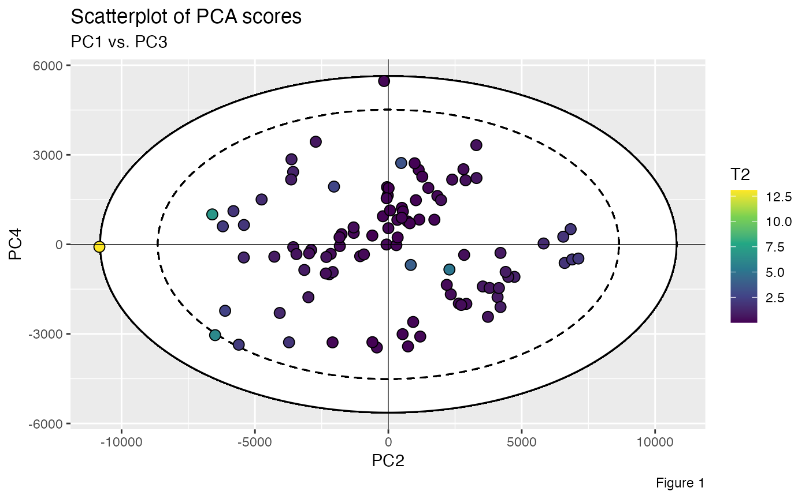
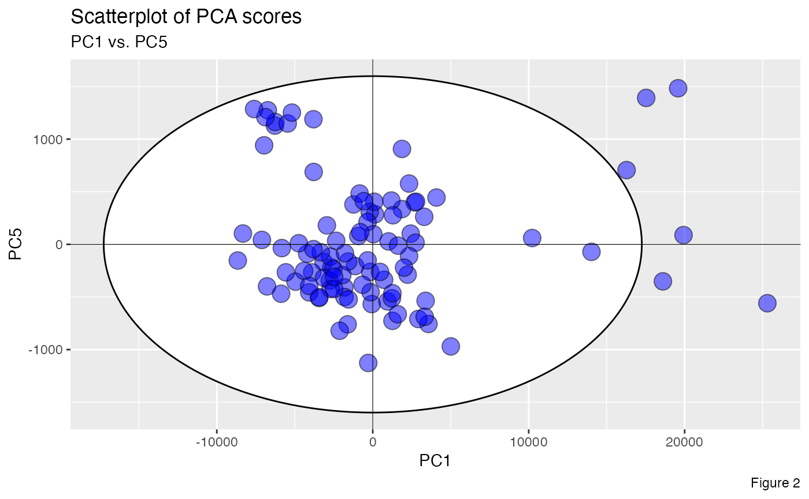

This package is specifically designed to help draw Hotelling’s T-squared ellipses on PCA or PLS score scatterplots, a crucial tool in chemometrics for multivariate data analysis and quality control. In the field of chemometrics, these ellipses serve as powerful visual aids for measurements assessment, outlier detection, and process monitoring. By superimposing Hotelling’s T-squared ellipses onto score plots, analysts can quickly identify abnormal samples and establish well-defined confidence regions for normal process operations.
The package’s functionality enables computing the Hotelling’s T-squared statistic, the semi-minor and semi-major axes of the otelling’s T-squared ellipse, and generates the coordinate points necessary for constructing a confidence ellipse. Specifically, the package provides two primary functions:
ellipseParam(), is used to calculate the Hotelling’s
T-squared statistic and the semi-axes of the confidence ellipses at 99%
and 95% confidence intervals.
ellipseCoord(), is primarily used to get the
x, y, and z coordinates for plotting 2D or 3D
confidence ellipses at user-defined confidence interval. The confidence
interval is set at 95% by default.
In this example, we use FactoMineR::PCA() to perform the
Principal Component Analysis (PCA) on a LIBS spectral dataset
specData, and extract the PCA scores.
set.seed(002)
pca_mod <- specData %>%
select(where(is.numeric)) %>%
PCA(scale.unit = FALSE, graph = FALSE)
pca_scores <- pca_mod %>%
pluck("ind", "coord") %>%
as_tibble() %>%
print()
#> # A tibble: 100 × 5
#> Dim.1 Dim.2 Dim.3 Dim.4 Dim.5
#> <dbl> <dbl> <dbl> <dbl> <dbl>
#> 1 25306. -10831. -1851. -83.4 -560.
#> 2 -67.3 1137. -2946. 2495. -568.
#> 3 -1822. -22.0 -2305. 1640. -409.
#> 4 -1238. 3734. 4039. -2428. 379.
#> 5 3299. 4727. -888. -1089. 262.
#> 6 5006. -49.5 2534. 1917. -970.
#> 7 -8325. -5607. 960. -3361. 103.
#> 8 -4955. -1056. 2510. -397. -354.
#> 9 -1610. 1271. -2556. 2268. -760.
#> 10 19582. 2289. 886. -843. 1483.
#> # ℹ 90 more rowsThe Hotelling’s T-squared statistic can be computed using the
ellipseParam function in two distinct ways. (1) By
specifying the parameter k: This represents the number of
principal components to retain. (2) By setting the
threshold parameter: This defines the cumulative explained
variance to determine the number of components.
T2 <- ellipseParam(pca_scores, k = 3)$Tsquare$value
T2
#> [1] 8.79727659 0.42574446 0.26720102 1.12758053 0.73815225 0.50178543
#> [7] 1.48895076 0.52248052 0.35995391 3.43505326 2.20554170 0.14665580
#> [13] 1.23019477 1.08187330 0.06404802 0.82350867 4.12091044 0.18901522
#> [19] 0.74937040 1.81186352 1.01387374 0.36322618 0.18201057 1.19587478
#> [25] 0.82387604 0.59000025 1.64384908 1.35023679 0.04035757 1.07207307
#> [31] 1.35289851 0.89287224 0.58566878 0.51087876 0.33557545 0.35322970
#> [37] 2.75957814 0.73510967 0.42097537 0.65499771 0.41084500 0.26551834
#> [43] 0.48229565 0.36048584 0.25235451 0.76994454 2.93735077 0.07159629
#> [49] 0.15337115 0.09562119 0.12416659 0.41598605 0.38472295 0.21898479
#> [55] 0.20860524 1.26153407 0.26389302 1.35227317 0.05781487 0.65100278
#> [61] 2.61898699 0.94048980 1.60881058 1.02169526 0.41282496 0.27235598
#> [67] 0.14854682 0.66617260 2.82560083 0.12785702 1.25327046 0.66607730
#> [73] 1.22850658 1.13312107 1.46864227 1.46171265 0.10436499 0.26006454
#> [79] 0.97128044 1.92028425 1.95885654 0.36084958 4.84793496 0.24714317
#> [85] 0.55723720 0.64080960 1.87718652 0.14398651 0.50051409 0.43680390
#> [91] 0.76213175 0.58130268 1.48307214 0.55700045 0.17208837 0.11091915
#> [97] 0.76406153 0.66296513 0.11773916 1.40404240
T2 <- ellipseParam(pca_scores, k = 5)$Tsquare$value
T2
#> [1] 5.35198031 0.80483847 0.41280666 1.09396270 0.54357239 1.05866612
#> [7] 1.54758552 0.38932531 0.85084455 3.33998923 1.33661709 2.67345992
#> [13] 1.44052380 0.74554569 0.09716023 0.63692986 3.03905923 0.14527271
#> [19] 1.65973096 2.03032292 0.68825673 0.70721780 1.05449654 0.95268942
#> [25] 0.67437285 0.51832530 1.60329970 1.65265923 0.46804197 1.61273965
#> [31] 0.90591680 0.83720307 0.57655751 1.27928674 0.40830752 0.25568007
#> [37] 1.92746313 0.43666648 0.42052805 0.53674167 0.33326678 0.31518697
#> [43] 0.53420621 0.28056547 0.39345409 1.31456541 2.34976600 0.21583160
#> [49] 0.19463398 0.06499698 0.76421962 0.82346628 0.60492739 0.25441618
#> [55] 0.44826694 0.75245708 0.84507014 0.97855109 0.25134633 0.68527571
#> [61] 2.26652396 1.59851453 1.12427685 0.84476325 0.25321959 0.44806235
#> [67] 0.74685450 0.45892445 2.81481934 0.49094953 0.80909145 0.57714113
#> [73] 0.77330414 0.74629051 1.84932002 0.88840206 0.46801132 0.33977349
#> [79] 0.58104753 1.35207024 1.73787700 0.51984216 2.91262151 0.20476197
#> [85] 0.70355158 0.55268503 1.63351195 0.24424689 0.55678461 1.86446207
#> [91] 0.45875232 0.39755343 0.98469700 0.55441164 0.20947523 0.63142698
#> [97] 0.71018219 0.51824037 0.17165582 0.88278586
T2 <- ellipseParam(pca_scores, threshold = 0.80)$Tsquare$value
T2
#> [1] 13.098377222 0.053558139 0.042763017 0.596881084 1.064949043
#> [6] 0.322634358 2.193588461 0.362201444 0.100269823 5.152202188
#> [11] 0.136476512 0.187288163 0.457018299 0.836596116 0.037948942
#> [16] 0.499423175 6.201798003 0.283938583 1.053279861 2.176093882
#> [21] 1.495054754 0.328273167 0.001077433 0.385735197 0.770015903
#> [26] 0.855099441 1.918512180 1.898354875 0.059730859 1.544579259
#> [31] 2.032241146 1.336688195 0.733955470 0.192465562 0.189870642
#> [36] 0.228768334 2.513724266 0.227842165 0.596628858 0.794052585
#> [41] 0.579569949 0.180495608 0.375303017 0.101758464 0.290449128
#> [46] 1.151911637 0.616332156 0.016266200 0.230869862 0.026046210
#> [51] 0.181580829 0.187191855 0.318096039 0.049303079 0.301571988
#> [56] 1.849456533 0.093358887 0.338259448 0.054705074 0.865871257
#> [61] 3.419405506 0.932424618 1.363364796 0.870186313 0.512986568
#> [66] 0.075112028 0.016206207 0.195475035 3.986477406 0.142755791
#> [71] 0.379374196 0.809324698 1.859972412 0.058403575 1.958324315
#> [76] 0.060646515 0.131828892 0.155979037 0.731558582 2.704001013
#> [81] 0.243720099 0.546490035 6.914605380 0.369950255 0.425961362
#> [86] 0.376793369 0.040293609 0.146837113 0.524107524 0.652320554
#> [91] 0.013362935 0.319746716 1.968145064 0.729551769 0.214084611
#> [96] 0.093838067 0.917982030 0.158779544 0.089226394 2.122042242
T2 <- ellipseParam(pca_scores, threshold = 0.95)$Tsquare$value
T2
#> [1] 6.53045498 0.77985914 0.39875666 1.27633910 0.63623773 0.64621852
#> [7] 1.94706323 0.39955561 0.65027891 2.60270069 1.68777974 2.33832862
#> [13] 1.73627591 0.89148735 0.09154971 0.61396625 3.74797974 0.14792815
#> [19] 1.16098653 1.37203684 0.75262904 0.74133604 0.39917534 1.18375135
#> [25] 0.84423117 0.49281117 2.02255319 1.09460844 0.09591725 0.96401329
#> [31] 1.02350705 1.05620821 0.58298463 1.26807473 0.51557341 0.27067599
#> [37] 2.41734914 0.54565033 0.47149967 0.56074231 0.36897968 0.39285391
#> [43] 0.52187589 0.26763215 0.48000911 1.01010296 2.54789673 0.16441988
#> [49] 0.11408734 0.07745065 0.89519603 1.01950514 0.59274496 0.25875285
#> [55] 0.50533086 0.94128973 1.06662628 1.21217577 0.13332013 0.49597035
#> [61] 2.49744440 1.05004728 1.20861993 0.82193478 0.31977530 0.36498547
#> [67] 0.91019140 0.50545945 2.13281990 0.27229890 0.93957749 0.72809042
#> [73] 0.94080967 0.89232795 1.12148274 1.12208355 0.58120095 0.24318126
#> [79] 0.72706291 1.70413391 1.59117880 0.26850066 3.67343823 0.25443017
#> [85] 0.75731684 0.48234231 1.94290842 0.11555869 0.37941945 1.20420583
#> [91] 0.56964432 0.45545274 1.11992496 0.57298359 0.14954172 0.75681961
#> [97] 0.89556581 0.49625512 0.14666752 1.05902198To visualize the confidence region for our multivariate data, we
employ the ellipseParam() function to generate a confidence
ellipse. Our objective is to calculate the lengths of the semi-axes for
this ellipse, focusing on the bivariate relationship within the PC2-PC4
subspace of our principal component analysis. We maintain the default
value for k (number of components) at 2. This ensures we’re
working with a two-dimensional representation. We specify
pcx = 2 and pcy = 4 as inputs. This directs
the function to use the 2nd and 4th principal components for the
x and y axes, respectively.
ellipse_axes <- ellipseParam(pca_scores, pcx = 2, pcy = 4)
str(ellipse_axes)
#> List of 5
#> $ Tsquare : tibble [100 × 1] (S3: tbl_df/tbl/data.frame)
#> ..$ value: num [1:100] 13.0984 0.0536 0.0428 0.5969 1.0649 ...
#> $ cutoff.99pct: num 9.76
#> $ cutoff.95pct: num 6.24
#> $ nb.comp : num 2
#> $ Ellipse : tibble [1 × 4] (S3: tbl_df/tbl/data.frame)
#> ..$ a.99pct: num 10800
#> ..$ b.99pct: num 5634
#> ..$ a.95pct: num 8639
#> ..$ b.95pct: num 4506We can extract parameters for further use:
a1 <- ellipse_axes %>% pluck("Ellipse", "a.99pct")
b1 <- ellipse_axes %>% pluck("Ellipse", "b.99pct")
a2 <- ellipse_axes %>% pluck("Ellipse", "a.95pct")
b2 <- ellipse_axes %>% pluck("Ellipse", "b.95pct")
Tsq <- ellipse_axes %>% pluck("Tsquare", "value")
pca_scores %>%
ggplot(aes(x = Dim.2, y = Dim.4)) +
geom_ellipse(aes(x0 = 0, y0 = 0, a = a1, b = b1, angle = 0), linewidth = .5, linetype = "solid", fill = "white") +
geom_ellipse(aes(x0 = 0, y0 = 0, a = a2, b = b2, angle = 0), linewidth = .5, linetype = "dashed", fill = "white") +
geom_point(aes(fill = Tsq), shape = 21, size = 3, color = "black") +
scale_fill_viridis_c(option = "viridis") +
geom_hline(yintercept = 0, linetype = "solid", color = "black", linewidth = .2) +
geom_vline(xintercept = 0, linetype = "solid", color = "black", linewidth = .2) +
labs(
title = "Scatterplot of PCA scores",
subtitle = "PC1 vs. PC3",
x = "PC2",
y = "PC4",
fill = "T2",
caption = "Figure 1"
) +
theme_grey()
An alternative method for visualizing the Hotelling’s T-squared
confidence region is to utilize the ellipseCoord()
function. This function generates the x and y
coordinates for plotting the confidence ellipse, offering greater
flexibility in visualization and further analysis. It allows users to
specify a custom confidence level via the confi.limit
parameter. The default confidence level is set at 95%, which is commonly
used in statistical analyses. The function returns a set of coordinates
that define the ellipse’s boundary in the chosen subspace, thereby
complementing the semi-axes information provided by the
ellipseParam() function.
In the example below, we focus on the subspace spanned by the 1st and 5th components.
xy_coord <- ellipseCoord(pca_scores, pcx = 1, pcy = 5, conf.limit = 0.975, pts = 500)
str(xy_coord)
#> tibble [500 × 2] (S3: tbl_df/tbl/data.frame)
#> $ x: num [1:500] 17253 17252 17248 17241 17231 ...
#> $ y: num [1:500] -3.75e-12 2.01e+01 4.02e+01 6.04e+01 8.05e+01 ...
ggplot() +
geom_polygon(data = xy_coord, aes(x, y), color = "black", fill = "white") +
geom_point(data = pca_scores, aes(x = Dim.1, y = Dim.5), shape = 21, size = 5, fill = "blue", color = "black", alpha = 1/2) +
geom_hline(yintercept = 0, linetype = "solid", color = "black", linewidth = .2) +
geom_vline(xintercept = 0, linetype = "solid", color = "black", linewidth = .2) +
labs(
title = "Scatterplot of PCA scores",
subtitle = "PC1 vs. PC5",
x = "PC1",
y = "PC5",
caption = "Figure 2"
) +
theme_grey()
The ellipseCoord function offers an optional parameter
pcz. When activated, this parameter extends the function’s
capabilities from two-dimensional ellipses to three-dimensional
ellipsoids, providing a more comprehensive visualization of multivariate
data, particularly in situation where the first two principal components
do not adequately capture the data’s variability.
In the example below, the resulting 3D Hotelling’s T-squared ellipsoid serves as a volumetric confidence region in the subspace spanned by the 1st, 2nd, and 3rd components. It encapsulates a specified proportion of data points, determined by the confidence level, providing a more holistic view of the data’s distribution and outliers in three dimensions.
xyz_coord <- ellipseCoord(pca_scores, pcx = 1, pcy = 2, pcz = 3, conf.limit = 0.95, pts = 100)
str(xyz_coord)
#> tibble [10,000 × 3] (S3: tbl_df/tbl/data.frame)
#> $ x: num [1:10000] 1.57e-11 1.57e-11 1.57e-11 1.57e-11 1.57e-11 ...
#> $ y: num [1:10000] 1.97e-11 1.97e-11 1.97e-11 1.97e-11 1.97e-11 ...
#> $ z: num [1:10000] 7745 7745 7745 7745 7745 ...
T2 <- ellipseParam(pca_scores, k = 3)$Tsquare$value